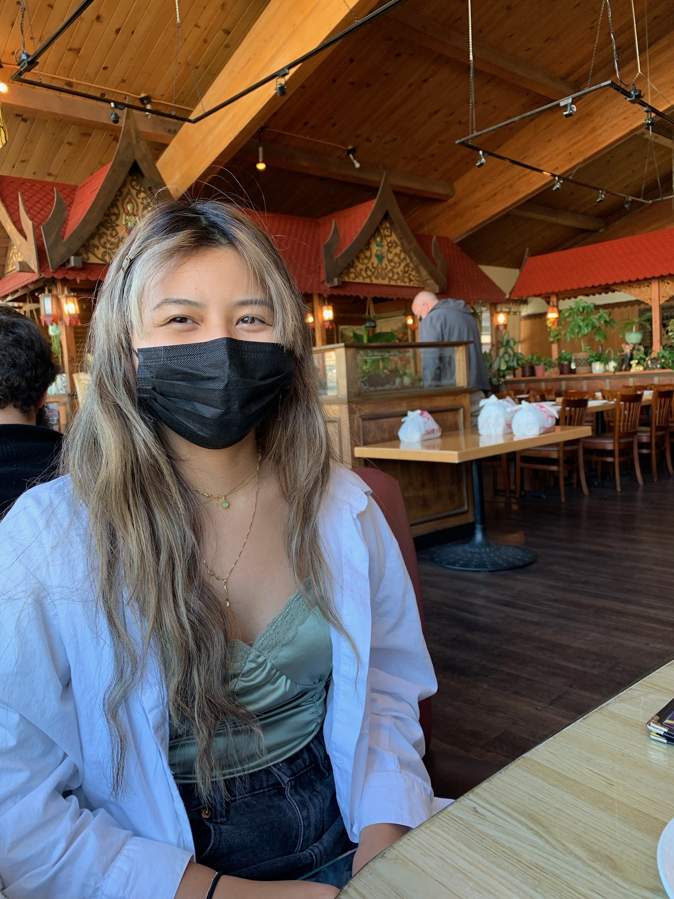

Diane's Homepage

About Me
Hi! My name is Diane and I'm a second year at UCSC majoring in computer science. I love cats, and I like to play video games in my free time.
Hi! My name is Diane and I'm a second year at UCSC majoring in computer science. I love cats, and I like to play video games in my free time.